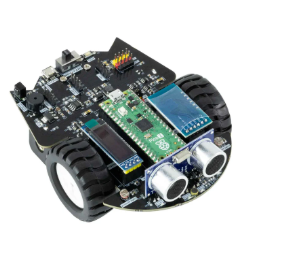

Les 2: Bouw en programmeer je eerste robot
Welkom bij les 2! Dit wordt een spannende les waarin je je eigen robot gaat bouwen en programmeren. Je gaat de Pico-robot in elkaar zetten, de software installeren en je eerste programma schrijven waarmee de robot kan bewegen.
Leerdoelen
Aan het einde van deze les kun je:
De Pico-robot correct in elkaar zetten
Thonny IDE installeren en gebruiken
Een eenvoudig programma schrijven om de robot te besturen
Code uploaden naar de Raspberry Pi Pico
De robot testen en debuggen
Wat is de Pico-robot?
De Pico-robot is een klein robotvoertuig dat wordt aangestuurd door een Raspberry Pi Pico microcontroller. Dit is een klein computertje dat speciaal is ontworpen om apparaten aan te sturen.
De robot heeft:
Motoren - om te kunnen rijden
Wielen - voor beweging
Sensoren - om de omgeving waar te nemen (zoals ultrasone sensor, lijnvolg sensoren)
LEDs - voor visuele feedback
Buzzer - voor geluid
Batterijen - voor stroomvoorziening
Raspberry Pi Pico - het “brein” van de robot

Stap 1: Bouwen van de Pico-robot
Benodigdheden
Controleer of je alle onderdelen hebt die je nodig hebt:
☐ Chassis (het frame van de robot)
☐ Raspberry Pi Pico microcontroller
☐ Motor driver board
☐ 2x DC motoren met wielen
☐ 1x Swivel wheel (draaiwiel vooraan)
☐ Ultrasone sensor (voor afstand meten)
☐ Lijnvolg sensoren
☐ LEDs en buzzer
☐ Batterijhouder met batterijen
☐ Schroeven en moeren
☐ Kabels en connectoren
Bouwstappen
De raspberry Pi wordt door je docent geprogrammeerd met de benodigde firmware. Je kunt deze stap dus overslaan!
🎉 Gefeliciteerd! Je robot is nu in elkaar gezet!
Onderdelen herkennen - Opdracht
Bekijk je robot goed en beantwoord de volgende vragen:
Waar zitten de motoren?
Welke sensor zit aan de voorkant?
Waar zit de Raspberry Pi Pico?
Hoeveel wielen heeft de robot in totaal?
Waar komen de batterijen?
Stap 2: Thonny software installeren
Thonny is een IDE (Integrated Development Environment) speciaal ontworpen voor Python. Het is perfect voor beginners omdat het eenvoudig en overzichtelijk is.
Installatie op Windows
Stap 2.1: Download Thonny
Ga naar https://thonny.org
Klik op de grote groene knop “Windows”
Het bestand wordt gedownload (thonny-x.x.x.exe)
Stap 2.2: Installeer Thonny
Dubbelklik op het gedownloade bestand
Klik op “Install for all users” (aanbevolen)
Klik op “Next” en volg de instructies
Klik op “Finish” wanneer de installatie klaar is
Stap 2.3: Start Thonny
Open Thonny via het Start menu
Bij de eerste keer opstarten wordt gevraagd om een taal te kiezen
Kies “Nederlands” of “English” (naar jouw voorkeur)
Thonny configureren voor MicroPython
Stap 2.4: Verbinden met de Raspberry Pi Pico
Sluit de Raspberry Pi Pico aan op je computer via een USB-kabel Stap 2.5: Controleer de verbinding
Koppel de USB-kabel los en weer aan (zonder BOOTSEL knop!)
In Thonny: klik rechtsonder en kies “MicroPython (Raspberry Pi Pico)”
In het onderste venster (Shell) zou je nu moeten zien:
>>>Dit betekent dat de verbinding werkt! ✓
Test de verbinding:
>>> print("Hello, Robot!")
Hello, Robot!
Type dit in de Shell en druk op Enter. Zie je “Hello, Robot!”? Dan werkt alles!
Stap 3: De pico_car bibliotheek installeren
De robot gebruikt een speciale bibliotheek genaamd pico_car. Deze bevat alle functies om de robot aan te sturen. Deze bibliotheek is al door je docent op de Raspberry Pi Pico gezet. Je kunt deze stap dus overslaan!
Stap 4: Je eerste programma voor de robot schrijven
Nu gaat het gebeuren - we gaan de robot laten bewegen!
Wat doet dit programma?
We schrijven een eenvoudig programma dat:
De robot 5 seconden vooruit laat rijden
Vervolgens de robot stopt
Code schrijven
Stap 4.1: Open een nieuw bestand in Thonny
Klik op “File” → “New”
Je ziet nu een leeg code-venster
Stap 4.2: Typ de volgende code over:
# Import de pico_car bibliotheek
from pico_car import pico_car
import time
# Maak een Motor object aan
Motor = pico_car()
print("Robot start met bewegen!")
# Auto vooruit, parameter (Linker motor snelheid, Rechter motor snelheid)
# Snelheid kan tussen 0-255 zijn
Motor.Car_Run(255, 255)
# Wacht 5 seconden
time.sleep(5)
# Stop de auto
Motor.Car_Stop()
print("Robot gestopt!")
De uitleg van dit programma kun je vinden in de Eerste Robot Programma Code Uitleg.
Stap 4.3: Bewaar het programma
Klik op “File” → “Save as…”
Kies “Raspberry Pi Pico” (niet je computer!)
Geef het bestand een naam:
test_vooruit.pyKlik op “OK”
Stap 5: Het programma uploaden naar de robot
Het programma staat nu op de Pico, maar draait nog niet automatisch.
Optie A: Direct uitvoeren (voor testen)
Stap 5.1: Zorg dat de robot klaar is
⚠️ Plaats de robot op een open plek (niet aan de rand van een tafel!)
Leg de robot op de grond of op een grote tafel
Plaats de batterijen in de batterijhouder
Zet de schakelaar op “ON”
Stap 5.2: Voer het programma uit
In Thonny: klik op de groene “Play” knop (▶) of druk op F5
De robot zou nu 5 seconden vooruit moeten rijden en dan stoppen!
Optie B: Automatisch opstarten
Als je wilt dat het programma automatisch start wanneer je de robot aanzet:
Stap 5.3: Hernoem naar main.py
Het bestand moet
main.pyhetenDe Pico voert automatisch
main.pyuit bij het opstartenKlik op “File” → “Save as…”
Kies “Raspberry Pi Pico”
Noem het bestand:
main.py
Let op: Er kan maar één main.py zijn op de Pico!
Stap 6: De robot voor de eerste keer testen
Veiligheidscheck voor het testen!
⚠️ BELANGRIJK - Lees dit voordat je de robot test:
✓ Test de robot NIET op een tafel zonder beveiliging
✓ Houd de robot vast als je voor het eerst test
✓ Zorg dat er geen obstakels in de weg staan
✓ Houd je handen uit de buurt van de wielen
✓ Test op de grond of op een grote, lege tafel
Test 1: Basistest
Stap 6.1: Eerste testrun
Zet de robot op de grond
Zet de schakelaar op ON
Druk op de Play knop in Thonny (of reset de Pico als je main.py hebt)
Observeer: Rijdt de robot vooruit? Hoeveel seconden?
Mogelijke problemen:
❌ De robot beweegt niet
Controleer: Staan de batterijen erin en is de schakelaar op ON?
Controleer: Zijn de motor kabels goed aangesloten?
Controleer: Staat de USB-kabel nog aangesloten? (Voor testen is dit nodig)
❌ De robot rijdt achteruit in plaats van vooruit
De motoren zijn verkeerd aangesloten
Wissel de draadjes van beide motoren om (+ en - omdraaien)
❌ De robot draait in een cirkel
Eén motor loopt sneller dan de andere
Dit is normaal! We kunnen dit in de code corrigeren
❌ Foutmelding in Thonny
Lees de foutmelding goed
Controleer of je
pico_car.pyhebt geüpload naar de PicoControleer of je code exact hetzelfde is als het voorbeeld
Test 2: Snelheid aanpassen
Nu gaan we experimenteren met verschillende snelheden!
Opdracht 2.1: Langzamer rijden
from pico_car import pico_car
import time
Motor = pico_car()
# Probeer verschillende snelheden
Motor.Car_Run(100, 100) # Halve snelheid
time.sleep(5)
Motor.Car_Stop()
Opdracht 2.2: Verschillende snelheden per motor
from pico_car import pico_car
import time
Motor = pico_car()
# Links sneller dan rechts - de robot draait naar rechts
Motor.Car_Run(200, 100)
time.sleep(3)
Motor.Car_Stop()
Vraag: Wat gebeurt er als de linker motor sneller draait dan de rechter motor?
Test 3: Verschillende bewegingen
De pico_car bibliotheek heeft meer functies dan alleen vooruit rijden!
Beschikbare functies:
Functie |
Wat doet het? |
|---|---|
|
Beide motoren vooruit |
|
Beide motoren achteruit |
|
Draai naar links |
|
Draai naar rechts |
|
Stop beide motoren |
Opdracht 2.3: Maak een vierkant
from pico_car import pico_car
import time
Motor = pico_car()
# Herhaal 4 keer (voor 4 zijden van het vierkant)
for i in range(4):
# Rij vooruit
Motor.Car_Run(200, 200)
time.sleep(1)
# Draai 90 graden naar rechts
Motor.Car_Right(200, 200)
time.sleep(0.5) # Experimenteer met deze tijd!
# Stop
Motor.Car_Stop()
Opdracht 2.4: Maak een dans-programma
from pico_car import pico_car
import time
Motor = pico_car()
# Vooruit
Motor.Car_Run(255, 255)
time.sleep(1)
# Achteruit
Motor.Car_Back(255, 255)
time.sleep(1)
# Spin naar links
Motor.Car_Left(255, 255)
time.sleep(0.5)
# Spin naar rechts
Motor.Car_Right(255, 255)
time.sleep(0.5)
# Stop
Motor.Car_Stop()
print("Dans afgelopen!")
Opdrachten
Opdracht 1: Basis bewegingen
Schrijf programma’s voor de volgende bewegingen:
A) Rij 3 seconden vooruit, stop, rij 3 seconden achteruit
B) Rij 2 seconden vooruit, draai 1 seconde naar links, rij 2 seconden vooruit
C) Maak een “zigzag” beweging
Opdracht 2: Snelheid experimenteren
A) Rij met 3 verschillende snelheden (langzaam, gemiddeld, snel)
B) Rij in een cirkel door één motor sneller te laten draaien
C) Vind de minimale snelheid waarbij de robot nog beweegt
Opdracht 3: Patronen maken
A) Programmeer de robot om een driehoek te rijden
B) Programmeer de robot om een achtje (∞) te rijden
C) Maak een “obstakelvermijding” patroon: vooruit, links, vooruit, rechts, vooruit
Opdracht 4: Uitdaging!
Programmeer de robot om:
2 seconden vooruit te rijden
Een volledige draai te maken (360 graden)
Terug te rijden naar het beginpunt
Tip: Experimenteer met de tijd voor de draai. Begin met 1 seconde en pas aan totdat het precies een volledige draai is.
Troubleshooting: Veelvoorkomende problemen
Probleem 1: Robot rijdt niet recht
Oorzaak: Motoren lopen niet exact dezelfde snelheid Oplossing: Pas de snelheden aan in je code
# Als robot naar links trekt:
Motor.Car_Run(220, 255) # Linker motor iets langzamer
# Als robot naar rechts trekt:
Motor.Car_Run(255, 220) # Rechter motor iets langzamer
Probleem 2: Robot reageert traag
Oorzaak: Batterijen bijna leeg Oplossing: Vervang de batterijen door nieuwe
Probleem 3: ImportError: no module named ‘pico_car’
Oorzaak: De bibliotheek is niet geüpload naar de Pico
Oplossing: Upload pico_car.py opnieuw naar de Raspberry Pi Pico
Probleem 4: Robot stopt niet
Oorzaak: Motor.Car_Stop() wordt niet aangeroepen
Oplossing: Voeg altijd een stop commando toe aan het einde van je programma
Probleem 5: Code werkt niet na reset
Oorzaak: Het programma heet niet main.py
Oplossing: Sla je programma op als main.py op de Pico
Tips voor succesvol programmeren
💡 Tip 1: Test kleine stapjes
Schrijf niet alle code in één keer
Test elke beweging apart
Voeg dan pas de volgende beweging toe
💡 Tip 2: Gebruik comments
# Dit is een comment - uitleg voor jezelf en anderen
Motor.Car_Run(255, 255) # Start motoren op volle snelheid
💡 Tip 3: Experimenteer met tijden
time.sleep()is vaak anders dan je verwachtTest verschillende waarden om te zien wat werkt
💡 Tip 4: Houd een logboek bij
Noteer welke snelheden goed werken
Noteer hoelang een draai duurt
Dit helpt bij latere programma’s
💡 Tip 5: Batterijen controleren
Zwakke batterijen = traag rijden
Test altijd met volle batterijen
Samenvatting
In deze les heb je:
✅ De Pico-robot in elkaar gezet
✅ Thonny IDE geïnstalleerd en geconfigureerd
✅ MicroPython geïnstalleerd op de Raspberry Pi Pico
✅ De pico_car bibliotheek geüpload
✅ Je eerste robotprogramma geschreven
✅ De robot laten bewegen met verschillende snelheden
✅ Verschillende bewegingspatronen geprogrammeerd
Je hebt nu de basis om je robot te programmeren!
Extra uitdagingen (voor thuis)
Uitdaging A: Parkeer-programma Programmeer de robot om:
Vooruit te rijden tot een “parkeerplek”
Achteruit in te parkeren
Precies recht te staan
Uitdaging B: Race-circuit
Maak een parcours met tape op de grond
Programmeer de robot om het parcours te volgen
Meet hoelang het duurt
Uitdaging C: Hindernisbaan
Zet wat hindernissen neer (bekers, boeken)
Programmeer een route eromheen
Probeer zo snel mogelijk te zijn
Uitdaging D: Muzikale robot
Combineer beweging met geluid (als je buzzer hebt aangesloten)
Maak een dans met muziek!
Volgende les
In de volgende les gaan we verder met:
Sensoren uitlezen (ultrasone sensor, lijnvolg sensoren)
De robot laten reageren op zijn omgeving
Automatische obstakelvermijding programmeren
If-statements en loops gebruiken voor slimmere robots